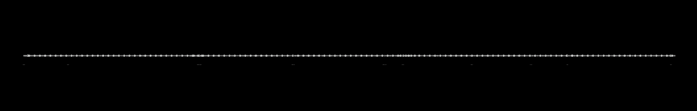
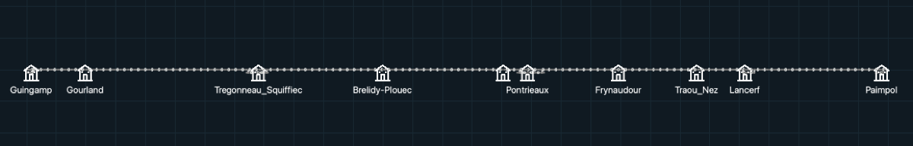
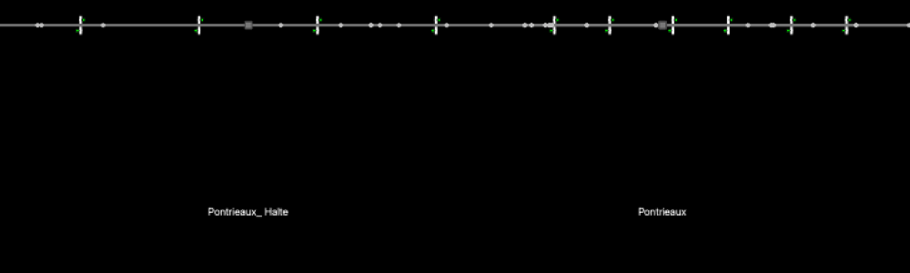
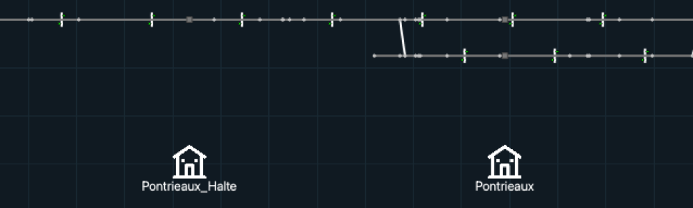
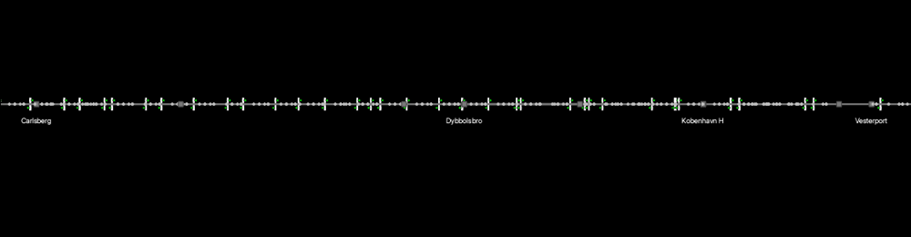
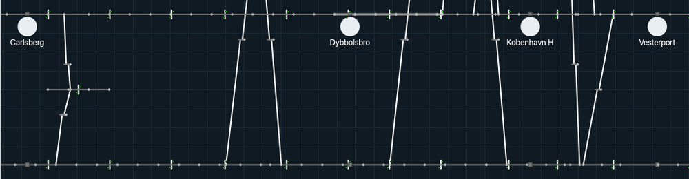
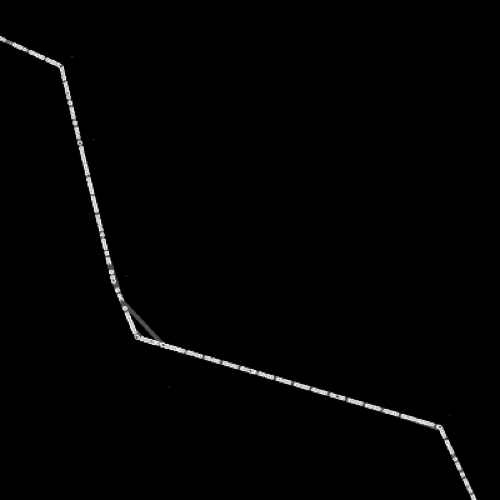
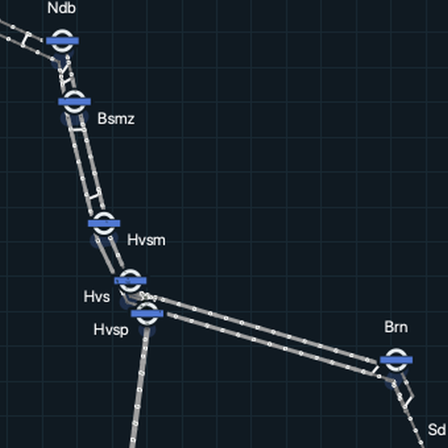
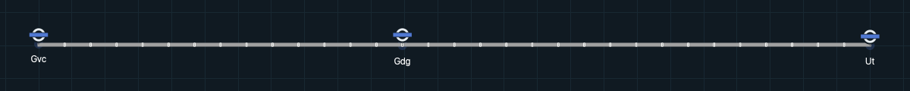
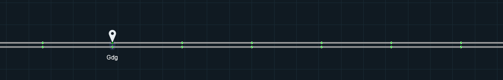

Historical track presentation¶
The visual reference is the initial imported renderer 472d0b5, particularly
paintNode, paintStationNode, paintStationIcon, paintStationName,
arcDrawing, paintConnection, paintSignal and paintTrain. The later
f138134 manifest repair does not change these symbols. The
renderer style map gives the historical function of each
primitive next to the way it is drawn now.
Canonical authored geometry and Fit padding remain in use, so comparisons must distinguish geometry from symbol presentation. Station artwork uses a mark per station class with the historical parent. At scene scale it keeps the historical anchor and offset; on the canvas it is placed by the station squares at the place of the station. Zoomed out the mark is a roundel on a faint area of the station, zoomed in a dot on each station square. Its frame on screen is at least 24 px and the name at least 12 px, so stations stay locatable at Fit; above that the scene size applies. The name goes under the squares, or off the tracks above the mark or beside the squares. Overlapping names are hidden by priority and marks are never hidden. The historical passenger PNG is restored as a separate resource. Train polygons keep the historical construction; their colour is one default yellow, or the colour of the service. The original renderer did not paint a train category badge over the locomotive.
Intentional differences¶
These are the only intentional differences from the reference renderer. A difference that is not listed here is not intended. The numbers are the pull requests that made the change, or the issue where none did.
Station pictogram and its size on screen (#579, #822, #1063). A light mark with a dark halo replaces the raster
station_pixmap. Until the tracks at the stations are 12 logical pixels apart on screen it is a roundel: a ring for a station without a platform, the ring with a blue bar for one with a platform and a disc with the bar for one with three or more connections. It stands on the upper edge of the hull of the station squares, above the middle of the dots of the closer look, and so on the faint blue area that covers the squares, also where the squares run diagonally. Closer in it is a dot on each station square, one small dot on the first square of a station without a platform and a capsule over the squares for one with three or more connections. A run without the shared preview does not count connections and draws no major station. The name sits under the station, or above the mark or beside the squares where its text would cross a track. At every zoom the frame of the mark is at least 24 px and the name at least 12 px, and names that overlap are hidden by rank. Where the scene size is larger than that, the scene size applies, as in the reference.Canvas (#509). The background
#101a22with a faint#182832grid replaces the solid black background.Selection (#606). A ring in the cue colour (61,214,255) marks the selected item. The reference recoloured the item blue with
myQGraphicsColorizeEffect.Train colours (#549, #555, #572). One default yellow, (235,210,55) with outline (110,90,20), replaces the keyword colours that
classifyTrainTypegave to freight, high speed, sprinter and intercity trains. It is the colour the reference gave every other train. A service with a valid colour overrides it on the canvas (#555) and in the result windows (#572).Signal head states (#586). A head without signalling data is an empty gray ring and a failed head is a red lamp. A head at least 6 device pixels wide also draws a mark: a white cross on a failed head, a dark bar on Stop, a dark dot on Caution and a short gray dash in the ring. The reference painted every head green, yellow or red and kept the colour for a code it did not know. Only a lit head, every state except the gray ring, has the hairline outline of the reference. Heads in the preview before a run stay green.
Presentation scale (#422). Symbol sizes, text and offsets are converted from the historical construction units by the factor
kdescribed under Measured presentation units.Mainline track grey (#822). Track of 120 km/h and above is (160,160,160) with width 3. The reference draws it (80,80,80), a contrast of 2.18:1 against the canvas, which is less than the 3:1 target and less than the local track (3.99:1). The new grey has 6.73:1.
Train size on screen (#822). A body the view shows thinner than 8 logical px is stroked to 8 px in its fill colour with round corners, and a click on the mark selects the train. Signal heads keep their 6 px rule.
Station name spacing (issue #387).
StationOverlayItem::displayNameputs a space before a capital that follows a lowercase letter and before the capital that starts a word after an acronym. The reference put a space before every capital after the first letter, soKBHallenreads “KB Hallen” instead of “K B Hallen” andPontrieaux_Haltehas no space after the underscore. In the committed scenes this changes 4 of the 10 names in Paimpol and 5 of the 94 in Copenhagen.Train speed. From a zoom of 3x, and for a selected or followed train at any zoom, the speed of a train is white 8 pt text with a dark (16,26,34) outline of 1 logical pixel, 8 logical pixels right of and above the centre of the train, at the same size at every zoom. Train speed labels hides it. The reference drew a black
addSimpleTextlabel at scene scale beside every running train, at its centre plus (6,-18) scene units.Track states (issue #387). Occupied, blocked and prepared sections are kept in the scene data and shown in the arc inspector. In a run and a replay
TrackLineItem::paintdraws an occupied line plain red (255,0,0) at the width of its speed class, and prepared and blocked lines in their speed colour. The reference tinted a block occupied by a train with a red colour effect and had no prepared or blocked state. An occupied line in a section that a signal failure blocks is red as well; the arc inspector shows it as blocked.Running state (issue #387). The reference gave every track a white colour effect at the start of each step, in
releaseBlockOccupationStatus. The current renderer keeps the speed-class colours during a run, apart from the red of the occupied lines.
Geometry and data differences¶
These differences come from the canonical scenes or from the historical input, not from the renderer, and are not on the list above.
Paimpol: the current frames show a siding above the line at Pontrieaux, with signals of its own, joined to the main line by a diagonal connection at each end. The reference frames of the same line show the main line only. The Paimpol historical blank mainline level and Guingamp anchor mismatch remain excluded layout and data differences.
Copenhagen: the reference frame draws one line where the current frame draws two parallel rows joined by crossovers. Canonical geometry draws every authored segment except the first and last arc of the 137 four-node tracks that
views.jsonmarks as double switches, which the reference also leaves out.Netherlands: the reference frame draws a single line where the current frame draws doubled tracks, stations beside them and crossovers. The reference build
472d0b5opens this case without trains and draws only part of the polyline, so the pair usesf138134, the same renderer with a repaired Netherlands case.
Preview and runtime infrastructure¶
Normal Open now draws semantic track, connection, ordinary-node and station-node items before Run, using the same paint classes as prepared runtime. Preview and run draw the connections first and the track lines over them with the same pens, and a lit signal head has a hairline outline in both. Preview has canonical string identities and read-only inspectors, not native simulation objects. White platform bars use the existing passenger-GUI mode; preview does not invent passenger counters. Inspection does not select an editor row or modify authored geometry. Rebuild, replacement and Run clear preview inspection and close menus; delayed menu actions re-resolve identities with revision and mode guards.
For runnable directed chains, preview mirrors the current runtime node rule:
the first point is ordinary even if a station belongs there; ordinary start
points on a four-node track have zero painted size, while station overrides at
later points and the final endpoint remain visible. Invisible ordinary nodes
retain picking targets. Four nodes alone do not establish a Copenhagen double
switch; a track view with double_switch does. Preview and run draw such a
track without its first and last arc and paint none of its ordinary nodes, as
the reference drew every four-node track of Input/Input_EGTRAIN_Banedanmark.
The simulation keeps every arc, and every other track keeps all its authored
segments. Malformed fallback chains have safe authoring preview coverage, not a
prepared-runtime equivalence claim.
Station artwork retains its own canonical identity, including duplicate names and position-only stations. Platform membership follows authored-order native field assignments; a later position-only membership replaces the station but retains any prior platform. Position-only artwork searches visible cached lines in authored order. Positions outside every visible line remain unsupported for comparison. Artwork and name visibility do not hide structural station squares.
Offscreen semantic, identity, lifetime and prepared-runtime checks are not calibrated visual acceptance. The evidence lists the captures that compare the two renderers and what they do not cover.
Measured presentation units¶
Historical projection construction used width 100, height 30 and geo_scale
800000 in Paimpol, Netherlands and Copenhagen. The renderer uses that fixed
reference convention, Q_h = 800000 * 100 / 360, not the current window size or
Fit scale. TrackPreview records its actual coordinate normalization S_c and
converts historical presentation distances by k = S_c / Q_h. On the committed
scenes this gives Paimpol 0.45, Netherlands approximately 0.444237158 and Copenhagen
approximately 0.397828422. Assignment has no historical capture reference.
Conversion requires every visible nonempty line to complete the authored station-view projection, whether schematic or geographic. Raw coordinates, missing views, invalid anchors, mixed/partially mapped scenes, empty or degenerate extents and nonfinite normalization retain presentation factor 1 for the whole scene. Hidden lines do not qualify or disqualify the visible scene. Normalization is idempotent, including its unit metadata; edits rebuild from the scene model.
Station artwork, its vertical gap, text metrics, derived annotation offsets and named nudges, structural nodes, signal heads/lateral separation, platforms, passenger adornments, train thickness and callout decoration use this shared conversion. On a schematic line, one that the station views of its region place at a single latitude, the annotation offset of a station with a named nudge is the exception: it counts in the reference spacing of the levels, so the name stays between the rows of track it was placed between. Original font and pixmap metrics are retained with fractional item scaling. Authored coordinates, levels, track geometry, physical train head/tail and length, and signal center/longitudinal +/-8 metre anchors do not scale again. Track, connection and signal strokes stay cosmetic. Picking areas are preserved. The Paimpol historical blank mainline level and Guingamp anchor mismatch remain excluded layout/data differences, not presentation calibration inputs.
Focused unit and offscreen preview/prepared-runtime fixtures verify these unit boundaries. They do not establish full historical visual acceptance or replace matched-extent application captures and manual interaction checks.
Evidence¶
Each pair below shows the same stretch of the network in the reference build and
in the current build, at the same size in pixels. All frames are at device pixel
ratio 1: the reference frames from 1280x800 windows, the current frames from the
offscreen platform with the canvas at 1254x566, its size in such a window. Each
image is a crop of the network canvas, resized so that the two frames of a pair
show the same extent. The zoom given for a pair is the zoom of the window before
the crop, so a frame can show the network larger or smaller than the window did,
and the sizes in a Fit frame and in a detail frame are not in the ratio of their
zooms. The reference builds are 472d0b5 and, for the Netherlands, f138134.
The current build is main 946ee7eb. Both builds zoom by 1.15 per click. The
zoom label of the current build is the ratio to its own Fit scale. The reference
build has no zoom label, so its zoom is the number of zoom-in clicks from Fit.
The reference build fits the scene rectangle and the current build fits the
painted track with 24 px of padding, so the same number of clicks from Fit does
not show the same extent in both builds.
Under each pair the first paragraph gives the build, the scene, the zoom and the landmarks, and the second says what differs inside the pair: the symbols first, then the geometry. The geometry differences come from the scenes, not from the renderer; Geometry and data differences lists them.
Paimpol at Fit¶


Reference build 472d0b5 above, current build main 946ee7eb below. Scene
Paimpol at Fit in both builds, so the whole line shows, with Guingamp at the left
end and Paimpol at the right end. The positions of the ten stations agree within
about 0.5 percent of the frame width.
In the symbols, the current frame draws a light disc with a dark halo and a readable name for each station and hides the name of Pontrieaux_Halte where it overlaps the name of Pontrieaux, while the reference frame has no station mark and names too small to read. In the geometry, the siding at Pontrieaux shows in the current frame only, as a short second row under the line.
Paimpol at detail¶


Reference build 472d0b5 above, current build main 946ee7eb below. Scene
Paimpol, 16 zoom-in clicks from Fit (zoom label 9.4x in the current build), then
10 arrow-key presses in both builds. Pontrieaux_Halte and Pontrieaux stand at the
same x in both frames, and the signals, node dots and station squares line up.
In the symbols, the current frame adds a light disc above each name, draws the names larger because the minimum name size applies at this zoom, and writes Pontrieaux_Halte without the space after the underscore that the reference frame draws. In the geometry, the siding below the line at Pontrieaux, with its diagonal connection and its signals, is in the current frame only.
Copenhagen junction¶


Reference build 472d0b5 above, current build main 946ee7eb below. Scene
Copenhagen, 22 zoom-in clicks from Fit (zoom label 21.6x in the current build),
then 10 arrow-key presses in both builds. Carlsberg, Dybbolsbro, Kobenhavn H and
Vesterport stand at the same x in both frames, within 3 px.
In the symbols, the current frame adds a light disc above each name and draws the names larger because the minimum name size applies at this zoom. In the geometry, the reference frame draws one line, with signals at more x positions than either current row, where the current frame draws two parallel rows joined by crossovers. The signals of both current rows stand at x positions where the reference line has a signal.
Netherlands stretch¶


Reference build f138134 above, current build main 946ee7eb below. Scene
Netherlands, 6 zoom-in clicks from Fit (zoom label 2.3x in the current build).
The landmarks are the track corner at Ndb, the corner between Hvsm and Hvsp and
the corner at Brn, which agree within about 20 px in the 500 px frames. This is
the loosest match of the pairs, because the current case has doubled tracks.
In the symbols, the current frame draws a light disc at each station and a name at all but one, at the bend between Hvsm and Hvsp, and the mainline track in grey (160,160,160), and the reference frame has no readable station label. In the geometry, the current frame draws doubled tracks, stations beside them and crossovers where the reference frame draws a single line, with one short extra segment at the corner between Hvsm and Hvsp.
Assignment corridor¶
The reference build has no capture of this scene, so only the current build is shown.


Current build main 946ee7eb, scene Assignment_Gvc_Gdg_Ut. The first frame is at
Fit with the stations Gvc, Gdg and Ut, and the two parallel mainline tracks of the
corridor, grey (160,160,160), read as one band. The second frame is 10 zoom-in
clicks from Fit (zoom label 4x), around Gdg, and shows the two tracks apart, with
a signal on each track at regular intervals.
What the captures show and do not show¶
The reference frames show the station names and no station mark, so the discs of the current frames have no counterpart in them. At Fit the names in the reference frames are too small to read, where the current build keeps the frame of the station mark at least 24 px and the name at least 12 px high.
The names are larger in the current detail frames than in the reference frames at the same extent. The current build draws a name at least 12 px high.
The current frames have the
#101a22background and its grid, the reference frames a black background.In both Paimpol detail frames a signal has a white post and base and a green head, and the opposing head sits on the other side of the line at the same offsets. Node dots are light gray (192,192,192) and sit at the ends of the track segments. Both builds draw the track with a cosmetic pen of 2 px.
No capture shows a running state, so the trains, which keep at least 8 px on screen, their speed, the red and yellow aspects, the red occupied lines and the white repaint of the reference are not shown.
Interaction (hit testing, signal inspection, layer toggles, Follow, zoom and pan) and the run, pause, stop and replay states are not shown by these captures.